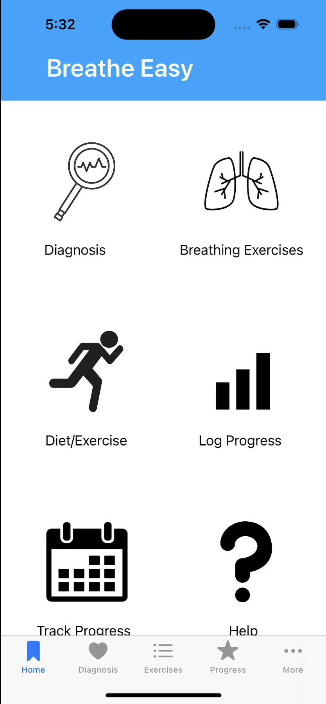
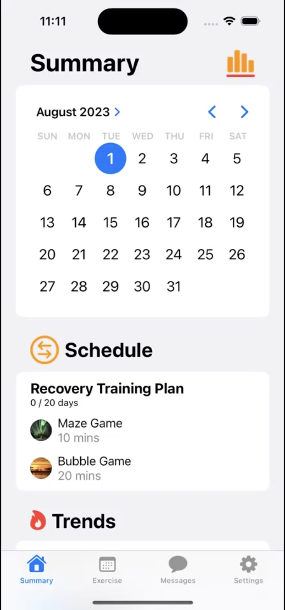
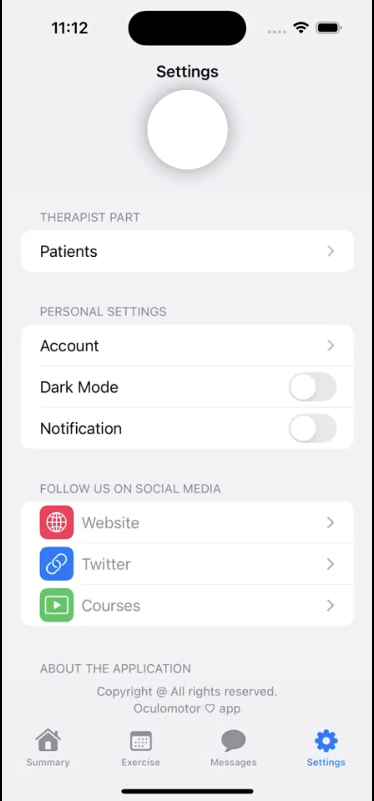
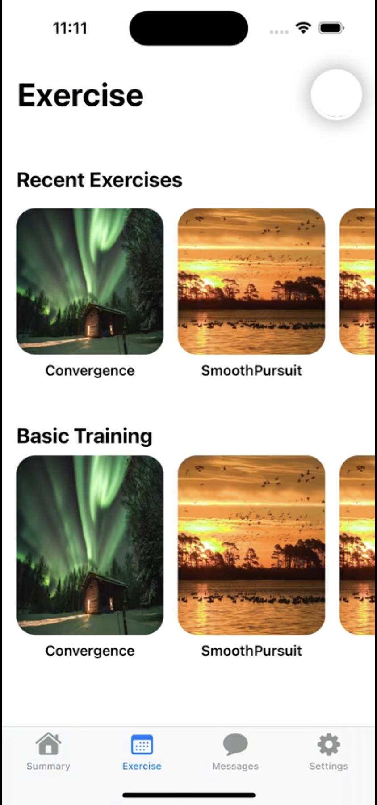

Under the guidance of professor Rabih Younes (Duke University), I worked on making physical therapy apps for the Fyzical Therapy and Balance Centers. Specifically, I worked on and app for Oculomotor Dysfunction and an app for breath training.
We want to encourage patients to regularly keep up with their exercises, and game-like exercises can assist with this.
Want to keep the overall look minimalist and easy to use, but also visually appealing.
Exercises should attempt to mimic the effect of exercises given in a clinic, and should thus have true impact.
Oculomotor dysfunction impairs a person's ability to coordinate their eye movements, which can affect things such as depth perception, following moving objects, etc. Thus, the exercises designed for this app utilized eye tracking and gaze tracking to follow the patients' progress in their vision during the exercise and over time. This eye and gaze tracking (shown in the videos) are a combination of Apple's ARKit library for iOS and some vector-calculus based scripts written for mapping and space transforms.



The design for the Oculomotor app specifically was kept relatively minimalist with a white and gray overall theme. In addition to the exercises page, a page was added to keep track of all previous exercise progress and show a calendar for future scheduled exercises. A basic settings page was also added, as well as a feature to message a physician.
For the Oculomotor app, a gaze tracking calibration exercise was added before proceeding with all other exercises. This was simply to ensure that the app's estimation of the patients' gaze was accurate to their true gaze, this way each exercise could be performed with correct gaze data each time.
The second app I developed was a breath training app to help assist patients with Asthma, Cystic Fibrosis, etc. This was simply an active instructional app that guided users through several active breathing exercises (about 5 mins each).